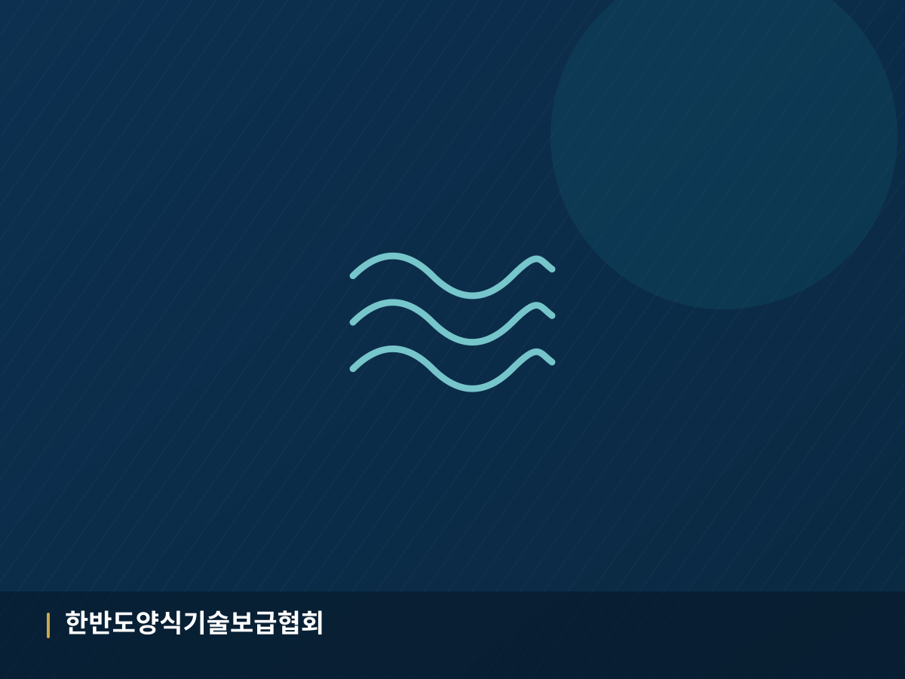
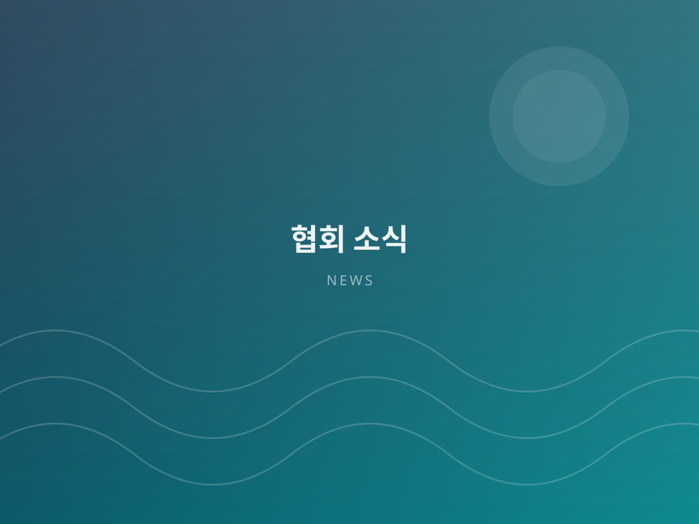
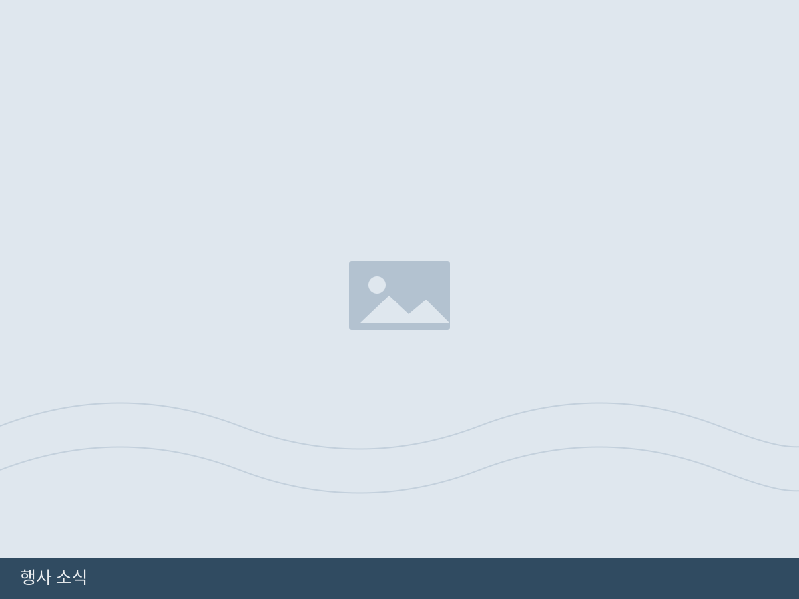

수산산업 기술보급Technology Transfer
검증된 양식 기술과 기자재를 현장에 보급하고, 컨설팅을 통해 생산성을 높입니다. Deploying proven aquaculture technology and equipment with hands-on consulting.
사단법인 한반도 양식 기술보급협회는 검증된 양식 기술의 현장 보급, 수산산업 종사자의 기술향상 교육, 해양 안전교육, 그리고 해외시장 개척을 통해 대한민국 수산산업의 경쟁력을 높여 갑니다. KPATA advances Korea's fisheries competitiveness through field-proven aquaculture technology transfer, professional skill training, marine safety education and overseas market development.

양식 기초·심화 과정 및 해양 안전교육 신청을 받고 있습니다. 단체 신청도 가능합니다. Basic / advanced aquaculture and marine safety courses. Group applications welcome.
신청 바로가기Apply now
양식 산업은 기술의 격차가 곧 소득의 격차가 됩니다. 저희 협회는 연구 성과에 머물러 있던 양식 기술을 현장 언어로 번역해 어업인과 기업에 전달하고, 체계적인 교육과 안전 관리를 통해 지속 가능한 수산업 생태계를 만들어 갑니다. In aquaculture, a technology gap becomes an income gap. We translate research into field-ready practice for fishers and companies, and build a sustainable fisheries ecosystem through systematic training and safety management.
이론이 아닌 실제 양식장에서 검증된 방법을 전달합니다. Methods proven at working farms, not just in theory.
수산·해양 분야 전문가와 현장 기술자가 함께합니다. Specialists and field engineers work side by side.
해외 바이어·기관과 연결해 새로운 시장을 개척합니다. Connecting members with overseas buyers and agencies.
해양 안전교육으로 사고 없는 작업 환경을 만듭니다. Marine safety training for accident-free workplaces.
기술보급부터 교육, 안전, 해외 진출까지 수산산업의 전 과정을 지원합니다. From technology transfer to training, safety and export — we support the full value chain.
검증된 양식 기술과 기자재를 현장에 보급하고, 컨설팅을 통해 생산성을 높입니다. Deploying proven aquaculture technology and equipment with hands-on consulting.

해외 바이어 발굴, 수출 상담회, 국제 박람회 참가를 지원합니다. Buyer matching, export consultations and international trade fairs.

기초·심화 과정과 실습 교육으로 종사자의 기술 역량을 끌어올립니다. Basic to advanced courses with practical, on-site training.

해상 작업 안전, 응급 대응, 안전 관리 체계 교육을 제공합니다. Offshore work safety, emergency response and safety management systems.
“기술은 나눌수록 커집니다. 우리 협회는 앞선 양식 기술을 모두의 것으로 만들어, 바다에서 일하는 모든 분들이 더 안전하고 더 풍요롭게 일하실 수 있도록 돕겠습니다.” “Technology grows when it is shared. We make advanced aquaculture know-how common ground, so that everyone working at sea can work more safely and more prosperously.”


2026-08-01
2026-07-22

2026-07-10
교육 현장, 기술 보급 사례, 해외 활동을 영상으로 확인하실 수 있습니다. 협회 공식 유튜브 채널에서 더 많은 영상을 만나보세요. See our training sessions, technology transfer cases and international activities. More videos on our official YouTube channel.
협력 기관 · 참여 기업PARTNERS & COLLABORATORS
교육 신청, 기술 자문, 업무 협약, 후원까지 — 편하게 문의해 주세요. Training, technical advisory, partnership agreements and support — just reach out.